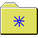
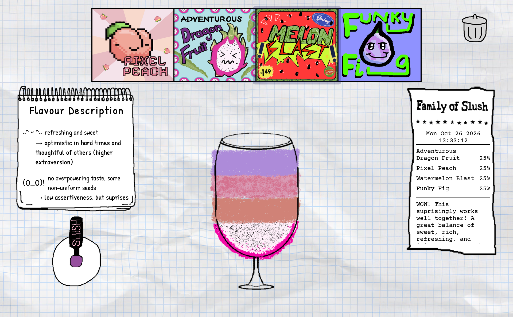

Family of Buttons Slush

Family of Slush Project
A collaborative project exploring team dynamics through a slushy-machine concept. Each team member designed a flavor button to express their personality. We used divergent and convergent design methods when sketching, to explore ideas and bring the concept together.
Project resources
- Website Link Click here
- GitHub Click here
- Figma Click here
- Personal Contributions Click here